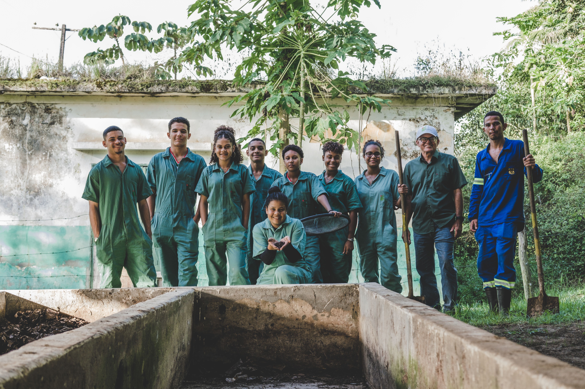
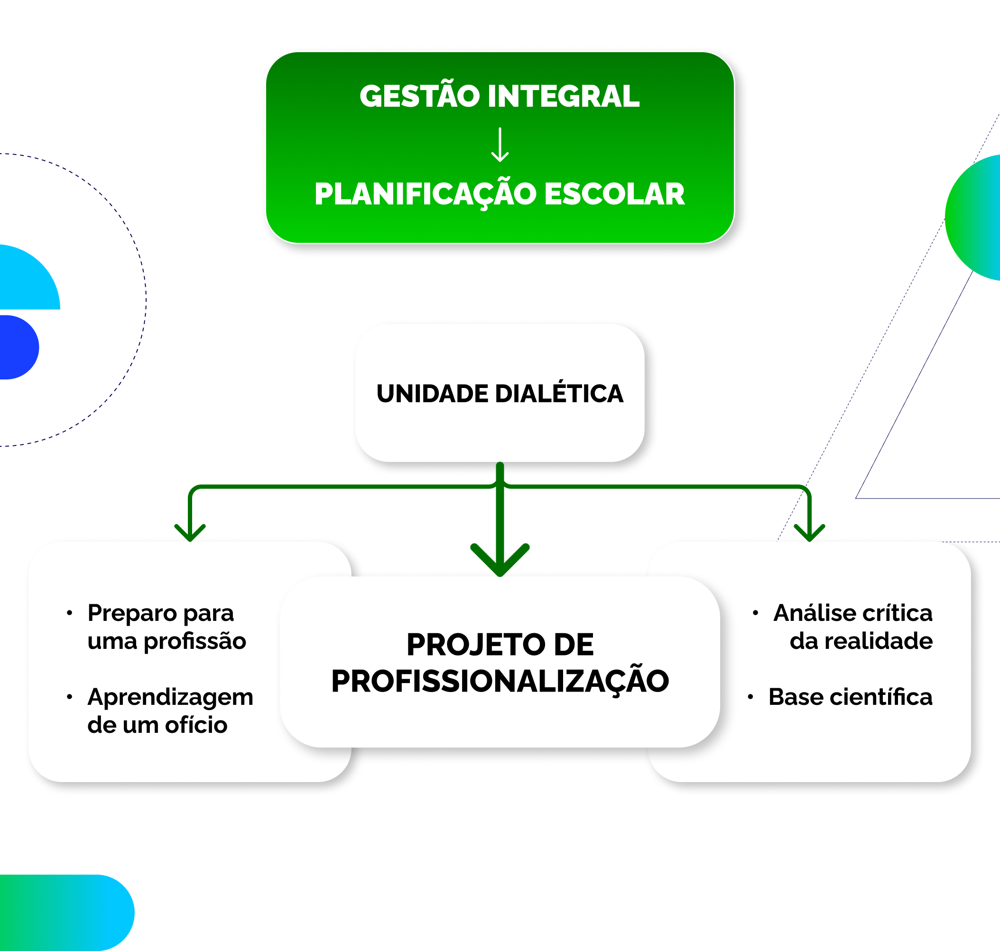

Capítulo 3
A gestão da escola na perspectiva politécnica como fundamento da EPT integral e integrada

No capítulo anterior, analisamos a Educação Profissional no processo de consolidação do capitalismo no Brasil, destacando a Educação Profissional e Tecnológica (EPT) como uma demanda histórica das lutas populares. Também discutimos as formas de gestão alinhadas ao neoliberalismo e as alternativas críticas a este cenário, como a perspectiva politécnica, que propõe uma abordagem integrada e transformadora.
Neste capítulo, a discussão é desenvolvida a partir dos três grandes eixos que organizam o processo de gestão da escola na perspectiva politécnica: o currículo integrado; a participação popular com auto-organização coletiva; e a indissociabilidade entre ensino, pesquisa e extensão. Tendo como base o conceito de formação humana integral (analisado nos capítulos anteriores), o objetivo central é construir a ideia de uma gestão integral da EPT, consubstanciada em torno das relações entre o trabalho, a ciência e a cultura.
Os três objetivos deste capítulo dizem respeito, portanto, aos eixos que serão desenvolvidos a seguir: primeiro, compreender as relações entre a política curricular e os instrumentos de gestão da EPT integral e integrada; segundo, relacionar a missão da escola de EPT com as demandas e agendas postas pelas lutas sociais, seja nas dimensões local ou regional, seja em termos de projetos de país; por último, analisar a articulação entre a produção do conhecimento, a transmissão de saberes e a transformação social, assumindo a indissociabilidade entre ensino, pesquisa e extensão como questão central da EPT integral e integrada.
O infográfico a seguir apresenta um esquema que representa a noção de gestão integral da EPT e será retomado, ao final do capítulo, como forma de síntese. Vale observar que os três elementos que serão desenvolvidos ao longo do capítulo funcionam como pilares do conceito de gestão integral, sendo a concepção coletiva de educação – voltada às demandas postas pelas lutas sociais – o sustentáculo central. Além disso, o conteúdo de cada um desses elementos é dado pela perspectiva da politecnia, que também discutimos nos capítulos e unidades anteriores.

Título: Gestão Integral
Fonte: Prosa (2025a).
A partir dessas observações iniciais, buscamos responder a três questões:
1) De que forma a política curricular fornece elementos para pensar um acompanhamento do trabalho pedagógico adequado na EPT integral e integrada?
2) Como as demandas da classe trabalhadora são articuladas ao projeto pedagógico da EPT integral e integrada e qual o papel da gestão nessa articulação?
3) É possível pensar uma relação dinâmica entre ensino, pesquisa e extensão em todos os níveis da EPT? ou se trata de um tema exclusivo dos cursos de nível superior?